Ron Hickman, the inventor of the Workmate, formed Mate Tools Limited in Hoddeston, Hertfordshire, England in the late 1960's to manufacture the Workmate. Mate Tools sold the Workmate directly to customers starting in 1968. By 1970 Hickman managed to get some placement in retail stores. The Mate Tools Workmate was sold up until late 1971, by which time Black & Decker had bought the manufacturing and distribution rights from Hickman. Mate Tools continued manufacturing the Workmate into 1972 but supplied that final production to Black & Decker who sold them under their own name with the model number WM125. See my separate page about the WM125 to see more photos and learn about the minor differences between the two.
The Mate Tools Workmate had only minor changes during its production run. One was the addition of an automatic safety catch; another was a pair of holes in the front jaw for attaching the optional Team-Mate.
The original Workmate is a single-height folding portable workbench and vise. The vise jaws (or "vice bars" as Hickman called them) are made of seasoned beech that is 1-3/4" thick, 27" long and 4-3/4" wide. This is thicker, shorter, and narrower than the later full-size Workmates. The jaws open only 3", compared to 4" to 5-1/2" for later ones. The jaws have the same "taper action" as later Workmates using the same design of pivot nuts. They do not have holes for bench dogs, which seems like a surprising omission. The vise handles are a hinged two-piece assembly with an unusually skinny rod to grip. The hinge allows the rod to be folded flat, lying out of the way so that it doesn't stick out.
The Workmate is 23" tall and weighs 32 pounds. The upper and lower frame components are made of steel, painted blue. In the UK, Hickman's blue continued as the color associated with Workmates for many years. For the all-aluminum follow-up model, the WM325, the vise handles, the swivel pegs, and the lettering on the H-frames are blue. The next models, the WM525 and WM625, brought back the blue-painted steel frames, although the WM625 retained the aluminum H-frames. Meanwhile, in North America a dark gray paint became the standard color when production began in 1975.
What we now call the H-frames were simply called the legs. The folding mechanism depends on side stays much like later Workmates, but with a fixed pivot at their upper ends and a slot in the lower frame pieces for the stays to slide in, the reverse of the later Workmates. There is a clamp knob at the lower attachment point for each side stay that has to be loosened to fold or unfold the Workmate and tightened to secure it in either the folded or unfolded position. Later models had a safety catch added, but it was intended only to keep the Workmate from collapsing while you tighten the knobs. The original Workmate does not have the more convenient automatic latching feature found on the later designs.
The Workmate has four rubber feet, one of which (the right rear) is adjustable from above for leveling on uneven surfaces. The lower steel frame is completely filled with a 3/4" plywood baseboard. Hickman's literature emphasized the solidity of the Workmate, both in its own construction and by being held firmly in place by the user's own weight. Many of the illustrations show the user standing with both feet on the baseboard or sitting on the vise bars.
There are four small square black rubber pads on the back end of the lower frame, to protect the paint when you stand the Workmate on end for storage. These pads must have come off pretty easily because they are missing in almost every photo I have seen.
Apparently there was considerable criticism of the Workmate as being too low to be used as a workbench. Hickman addressed this frequently in his product literature. Some of the more creative assertions were that the low height allowed you to "sit in comfort at one end and work on the other" or "for standing on to decorate." He provided illustrations of these uses in the owner's manual, promotional brochure, and newspaper advertisements. However he realized a bench-height option was necessary, so he devised the Team-Mate, a portable benchtop unit to attach to your Workmate. The Team-Mate is 32" tall with a 37-1/2" x 17-1/2" work surface, much larger than the Workmate. It weighs 32 pounds, the same as the Workmate itself. It has a pair of legs at one end and the other end is supported by the Workmate. It could either be clamped into the jaws of the Workmate or attached to one of a pair of 1/2"-diameter holes in the front jaw of the Workmate.
Mate Tools sold other accessories for the Workmate nearly from the beginning. The Wallmate is a pair of metal wall brackets for hanging the Workmate for storage. The Tidymate is a 6'x4.5' flax canvas floor sheet to keep your work area neat and clean. The last addition was the Toolmate, "the ideal tool cabinet, tool box and tool carrying tray combined". I have yet to see a Toolmate.
Mate Tools Workmate
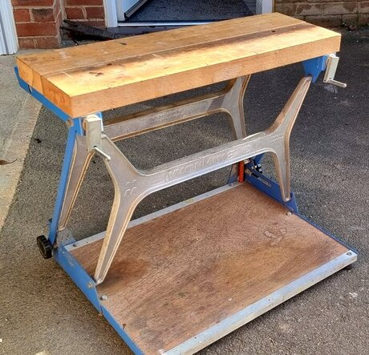

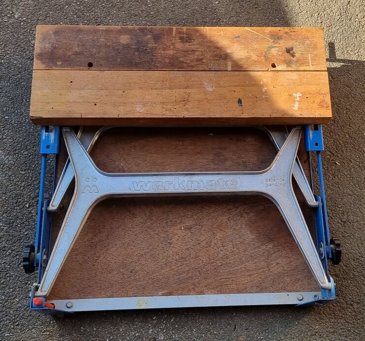
Holes in the front jaw for attaching the Team-Mate

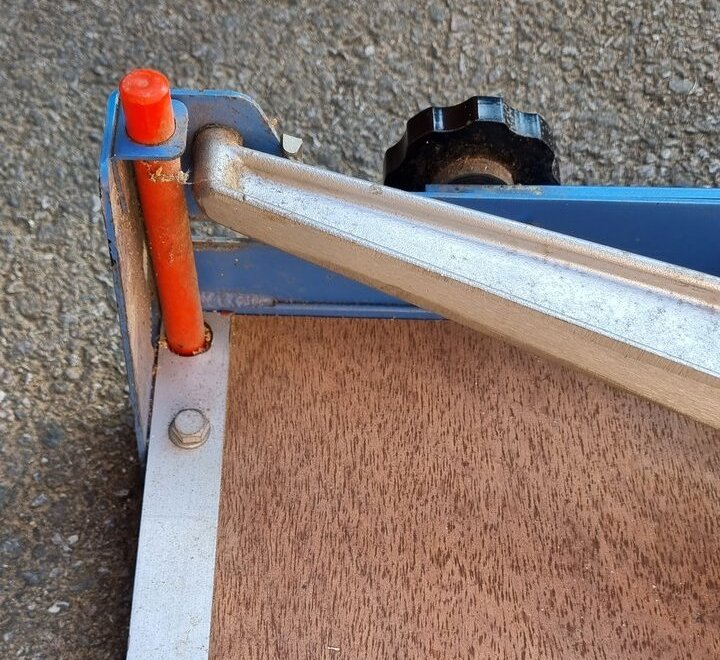
Adjuster post for the right-rear foot


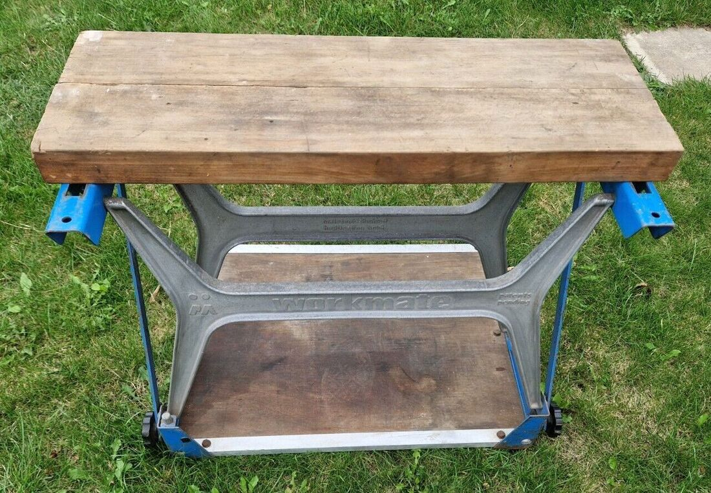
Earlier Workmate without the holes

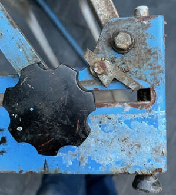
Locking knob and safety catch

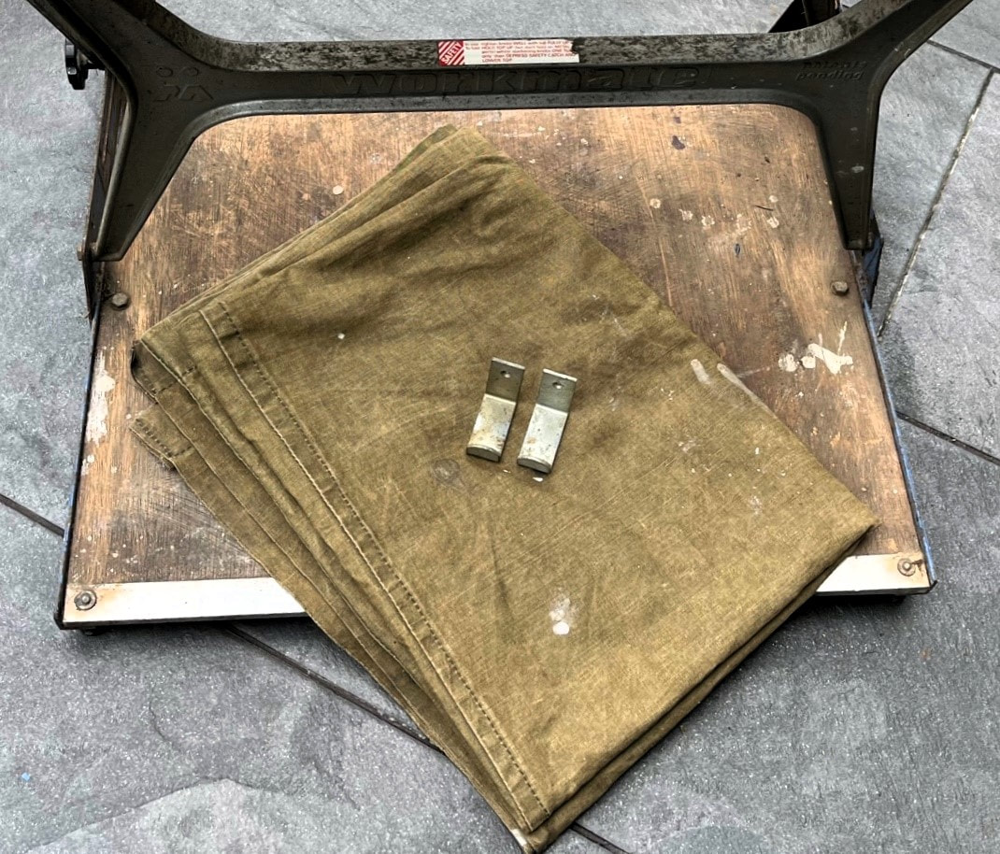
The Tidymate and Wallmate accessories

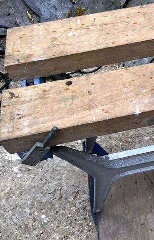
Handle folded out flat

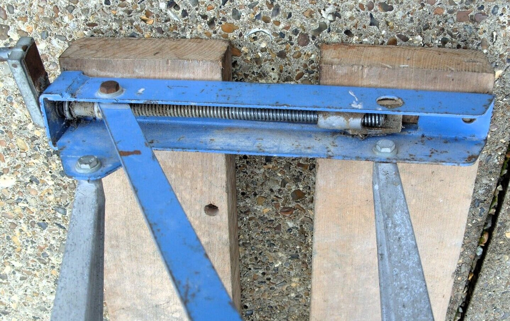
Same type of vise screw and pivot nut as later models

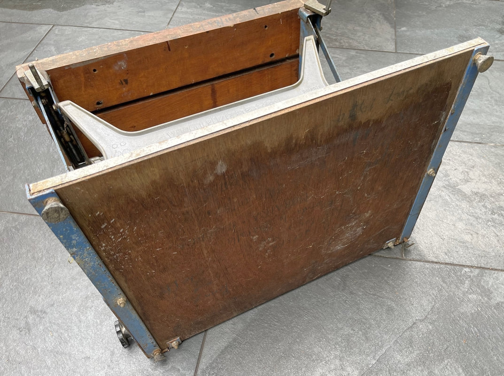
Bottom view of the baseboard showing feet

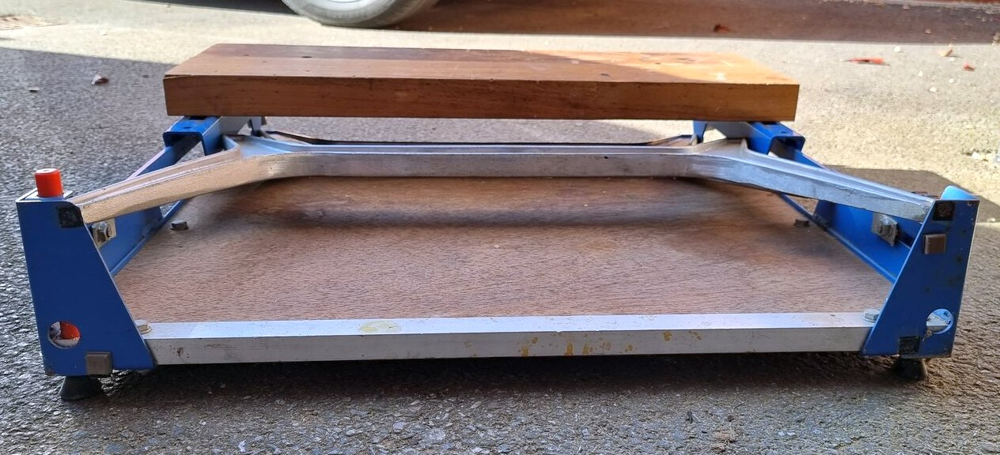
Small black rubber pads protect the paint

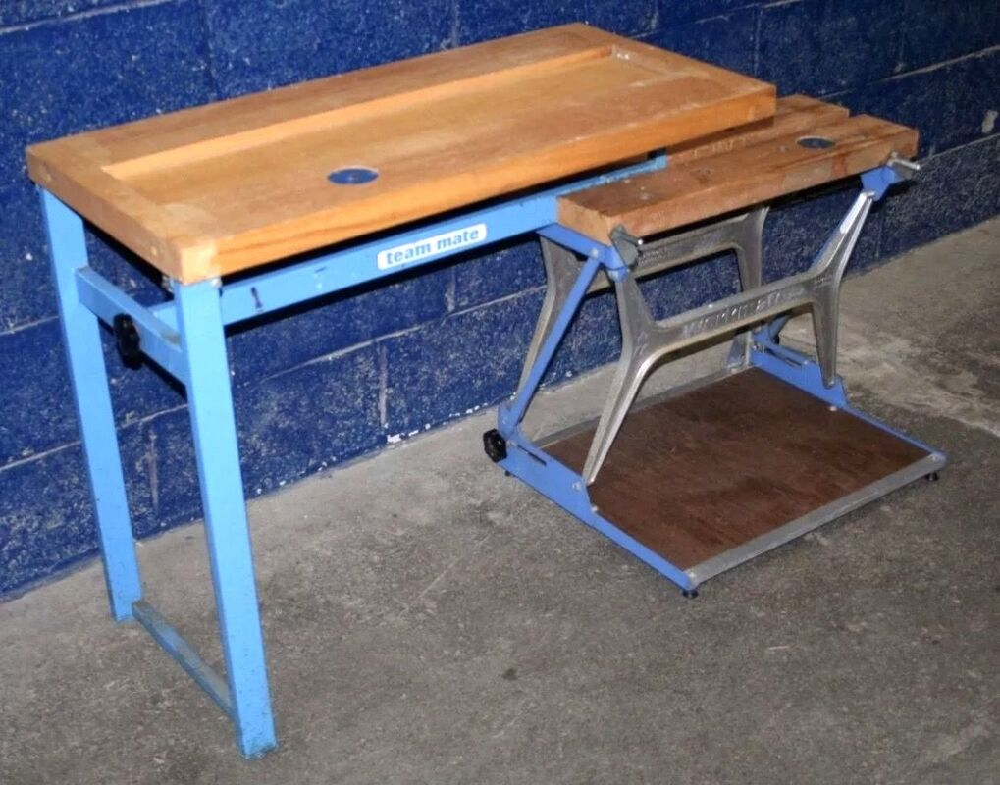
Team-Mate clamped into a Workmate